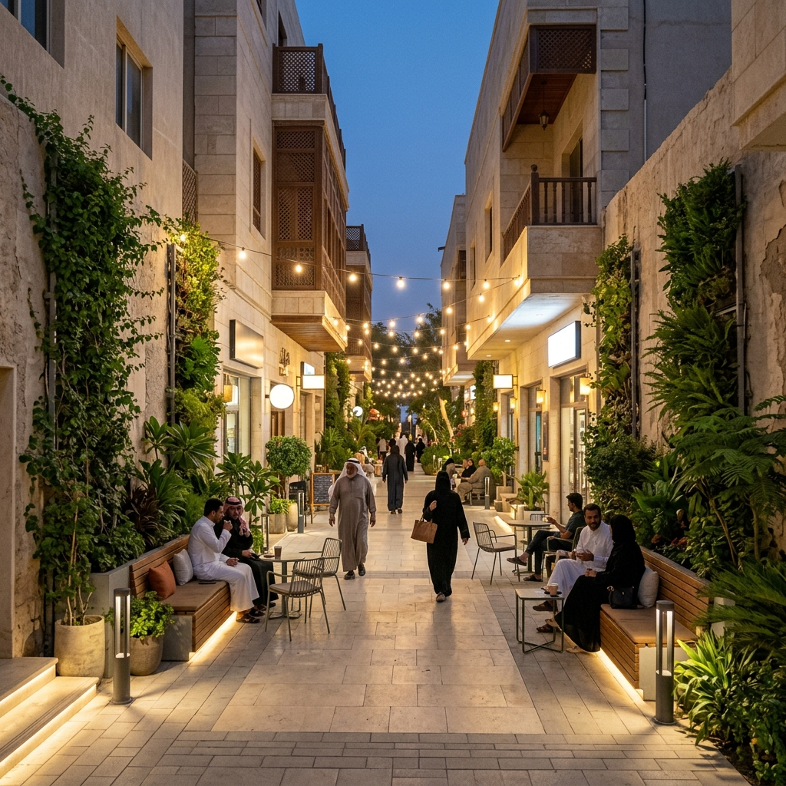
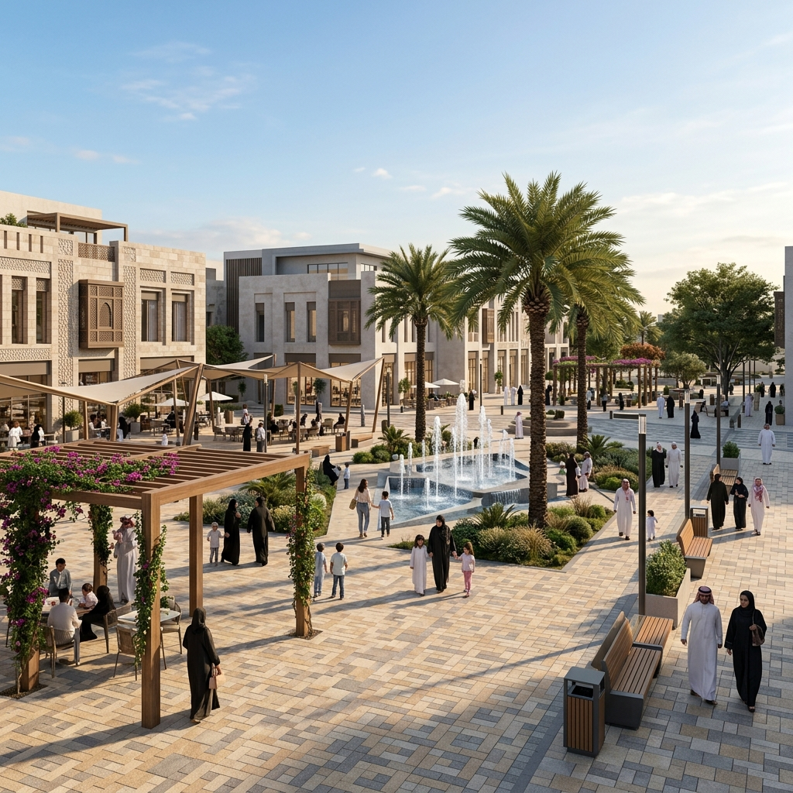

الواجهات البحرية كفضاء ترفيهي وبيئي مستدام يعزز الهوية الساحلية
تصنيفات تحدد أسلوب تفاعل الفراغ مع البحر والزوار
الكورنيش العام النشط (Active Promenade)
ممتد بمحاذاة الشاطئ ويشهد كثافة عالية من الزوار لممارسة الرياضة والمشي والتنزه يومياً.
- مسارات جري ومشي ودراجات عريضة ومفصولة.
- ألعاب أطفال وجلسات عائلية متعددة ومظللة.
- أكشاك بيع ومقاهٍ ومطاعم موزعة بذكاء.
- مواقف سيارات كافية بعيدة عن الشاطئ.

الشاطئ الطبيعي أو الرملي (Natural Beach)
يركز على الحفاظ على الطابع البيئي الطبيعي ويوفر اتصالاً مباشراً مع رمال البحر والمياه.
- مسارات مشاة رملية أو خشبية خفيفة.
- نقاط مراقبة وإنقاذ لسلامة السباحة.
- مظلات شمسية خفيفة ذات طابع طبيعي.
- تجنب الهياكل الخرسانية الكبيرة.

المارينا أو مرفأ القوارب (Marina Waterfront)
فراغات مطورة تحيط بمرافئ القوارب واليخوت وتجمع بين الاستخدام الترفيهي والتجاري المتميز.
- أرصفة مشاة خشبية (Decking) مرتفعة.
- مطاعم وجلسات مطلة مباشرة على الماء.
- ساحات عامة صغيرة للفعاليات والاحتفالات.
- إنارة تجميلية ليلية متميزة.
خمسة مبادئ تضمن استدامة ونجاح الفراغ الساحلي
العناصر المادية المكونة لقطاع الكورنيش النموذجي
الضوابط والمقاييس الفنية المعتمدة للواجهات البحرية
معايير استمرارية المسار وعرضه الصافي
يجب ألا يقل العرض الصافي لممشى المشاة الرئيسي المحاذي للبحر عن 4.0 أمتار لاستيعاب تدفق الزوار بكثافة عالية دون تداخل أو عوائق.
اشتراطات اختيار وتثبيت المواد المقاومة للملوحة
استخدام مواد ذات مقاومة عالية للرطوبة والأملاح مثل الأخشاب المعالجة (WPC) وبراغي الإستانلس ستيل (Grade 316) والخرسانة عالية المقاومة للكبريتات.
معايير السلامة وتأمين الحواف من السقوط
تركيب حواجز حماية (Balustrades) بارتفاع لا يقل عن 1.1 متر على الحواف المباشرة للماء، مصممة بفتحات تمنع تسلق الأطفال ودون حجب المظهر البصري للبحر.
متطلبات التظليل والراحة الحرارية الساحلية
توفير برجولات وهياكل تظليل كبرى وارفة على مسافات منتظمة وتكثيف زراعة أشجار النخيل والأنواع المحلية المتكيفة مع الملوحة على طول الكورنيش.
الإنارة التجميلية وأمان الحركة ليلاً
استخدام إضاءة دافئة موجهة للأسفل لمسارات المشاة بارتفاع لا يزيد عن 4 أمتار لمنع الوهج البصري، مع إضاءة تجميلية خفيفة لحافة البحر لتعزيز الأمان البصري ليلاً.
منحدرات الوصول المريحة لشاطئ البحر
تأمين ممرات خشبية مائلة بميول لا تتجاوز 1:12 تمتد من الأرصفة الرئيسية مباشرة إلى الشاطئ الرملي لتسهيل حركة عربات الأطفال وذوي الإعاقة.